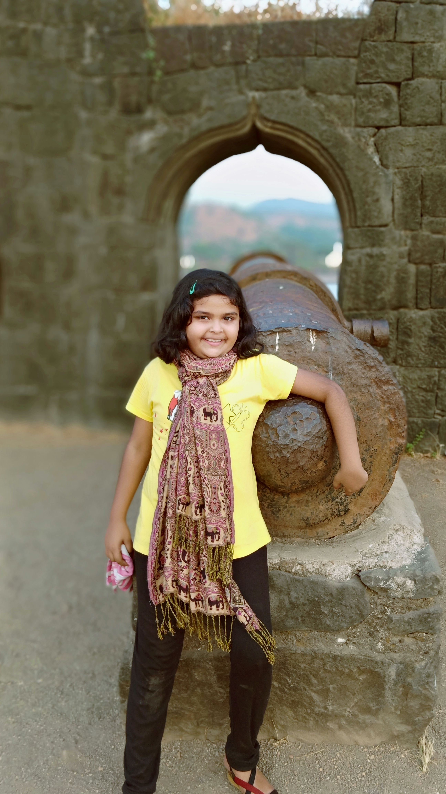
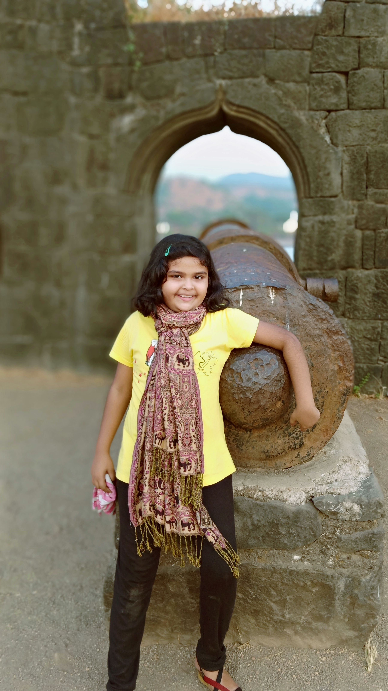

You need a complete day to explore the entire fort. Apart from that, there are some places you can cover after the trek. Torna Fort: Torna fort can be done from Rajgad fort. ... One can start the trek from Torna, reach Rajgad and then end the trek from Sinhagad
here is history
Little is known about the origins of this fort. There is a vihara on the fort datable to circa seventh-eight centuries A.D.[2] Malik Ahmad Nizam Shah I of the Nizam Shahi dynasty conquered the fort in 1585 and annexed it to the Nizam territory. In 1657, Shivaji Maharaj brought the whole of Konkan, which had been Nizam territory, under his control when he conquered Tikona along with the forts of Karnala, Lohgad, Mahuli, Songad, Tala, and Visapur.[3] This fort was a strategic nexus: the centre of control for the entire Pawana Mawal region. In 1660, Dhamale family, the Deshmukhs from Maval region were charged with ensuring the security of fort Tikona.It was under the Dhamale Deshmukh family for long time. Jaysingh invaded the region in 1665 and attacked the local villages but the forts held out. Tikona fort was surrendered to the Mughal warrior Kubadkhan, who had attacked the region together with Halal Khan and others, according to the Treaty of Purandar signed on 12 June 1665. Kubad Khan took over the fort on 18 June but it was later recaptured by the Marathas.[4] In 1682 King Sambhaji met Aurangzeb's son Akbar. After the meeting the Akbar was offered to stay on Tikona fort, however he was shifted to Jaitapur as the climate didn't suit him. A small battle was fought by Maratha army with British in 1818, before it was captured by the latter.
Fort trekking is not so difficult . it is so cool and enjoying
I have trek two forts till now it is very enjoying movement when i reach fort
raigad fort :
Chatrapati Shivaji Maharaj seized the fort in 1656, then known as the fort of Rairi from Chandraraoji More, The King of Jawali. Shivaji renovated and expanded the fort of Rairi and renamed it as Raigad (King's Fort). It became the capital of Chhatrapati Shivaji's Maratha Empire.[citation needed]
The villages of Pachad & Raigadwadi are located at the base of the Raigad fort. These two villages were considered very important during the Maratha rule in Raigad. The actual climb to the top of the Raigad fort starts from Pachad. During Chatrapati Shivaji's rule, A cavalry of 10,000 was always kept on standby in Pachad village.[citation needed]Shivaji also built another fort Lingana around 2 miles away from Raigad. The Lingana fort was used to keep prisoners.[citation needed]
In 1689, Zulfikhar Khan captured Raigad and Aurangzeb renamed it as Islamgad. In 1707, Siddi Fathekan captured the fort and held it until 1733. After 1733 maratha sardar captured raigad again and hold it until 1818.[3]
In 1765, The fort of Raigad along with Malwan in present Sindhudurg District, the southernmost district of Maharashtra, was the target of an armed expedition by the British East India Company, which considered it a piratical stronghold.[citation needed]
In 1818, the fort was bombarded and destroyed by cannons from the hill of Kalkai. And on 9 May 1818, as per the treaty, it was handed over to the British East India Company.[citation needed]
Major features
The Maha Darwaja
The Samadhi of Rajmata Jijabai
The Raigad Fort was built by Chhatrapati Shivaji Maharaj and the chief architect/engineer was Hiroji Indulkar. The main palace was constructed using wood, of which only the base pillars remain. The main fort ruins consist of the queen's quarters, six chambers, with each chamber having its own private restroom. In addition, ruins of three watch towers can be seen directly in front of the palace grounds out of which only two remain as the third one was destroyed during a bombardment. The Raigad Fort also has ruins of a market which was accessible to horseback riders. The fort also overlooks an artificial lake known as the Ganga Sagar Lake.
The only main pathway to the fort passes through the "Maha Darwaja" (Huge Door) which was previously closed at sunset. The Maha Darwaja has two huge bastions on both sides of the door which are approximately 65–70 feet in height. The top of the fort is 600 ft above this door.
The King's Darbar, inside the Raigad Fort has a replica of the original throne that faces the main doorway called the Nagarkhana Darwaja. This enclosure had been acoustically designed to aid hearing from the doorway to the throne. A secondary entrance, called the Mena Darwaja, was supposedly the private entrance for the royal ladies of the fort that lead to the queen's quarters. The convoy of the king and the king himself used the Palkhi Darwaja. To the right of Palkhi Darwaja, is a row of three dark and deep chambers. Historians believe that these were the granaries for the fort.[4]
From the fort, one can view the execution point called Takmak Tok, a cliff from which sentenced prisoners were thrown to their death. This area has been fenced off.[5]
The statue of Chatrapati Shivaji is erected in front of the ruins of the main market avenue that leads to the Jagdishwar Mandir and his own Samadhi and that of his loyal dog named Waghya. The Samadhi of Jijabai,Chatrapati Shivaji's mother, can be seen at base village of Pachad.
Additional famous attractions of the fort include the Khubladha Buruj, Nane Darwaja and the Hatti Talav (Elephant Lake).
Hirakani Buruj
The fort has a famous wall called "Hirakani Buruj" (Hirakani Bastion) constructed over a huge steep cliff. The legend goes "that a woman by the name of Hirakani from a nearby village had come to sell milk to the people living at the fort. She happened to be inside the fort when the gates got closed and locked at sunset. Hearing the cries of her infant son back at the village echo after nightfall, the anxious mother couldn't wait till dawn and courageously climbed down the steep cliff in pitch darkness all for the love of her little one. She later repeated this extraordinary feat in front of Shivaji and was bravely rewarded for it." In appreciation of her courage and bravery, Shivaji built the Hirakani Bastion over this cliff.
Avchitgad:
Avchitgad (Marathi: अवचितगड) is a fort located in the Sahyadri ranges of Maharashtra. The fort is situated near Roha in the Raigad district. At the base of this fort is a village called Medha and Padam - Kharapti.
Contents
1 History
2 How to reach
3 Places to visit
4 See also
5 Gallery
6 Notes
History
This fort is believed to be built by Shilahar kings and subsequently used by the Nizam of Ahmednagar. The great Maratha king Chhatrapati Shivaji is also believed to have reconstructed this fort. The work was carried out in a hurry and hence the name 'Avchit' (hurry) 'gad' (fort). In the Third Anglo-Maratha War, this fort was won over by Colonel Prother from the Peshwas in February 1818 along with other forts in the neighboring region.
How to reach
The approximate height of this fort is 977 feet.[1] The nearest railway station is Roha and Nidi. The Padam - Kharapti, Pingalsai and Medha village are well accessible by road. There are three routes to reach the fort. One route starts from the village Padam - Kharapti, Another route starts from the village Pingalsi, it takes 2 hours to reach the fort and the other route is from village Medha, which takes about 1hr. to reach the fort top. It is a fairly easy trek from Padam - Kharapti, the route passes through the jungle up to the fort. the route from Padam - Kharapti is good for Trekking and hiking here the villagers are really co-operative, The route from Padam - Kharapti is Jungle lore and enjoying. The route from Medhe village begins from a big well called "Haud". The water from this well is potable. Both the routes meet at a saddle-shaped hill. There is a small Devi temple at the col. From the top of the fort one can have a beautiful view of the neighboring forts of Talagad, Telbaila, Sarasgad, Ghangad, Sudhagad, Raigad and Savashnagad.
Places to visit
The fort has a large dodecagonal-shaped cistern which was used mainly for bathing and washing purposes. Nearby this cistern there are 6 smaller cisterns which have potable water. A small temple of the Pingalsai goddess is also situated atop. The main gate is also in good condition. There are four cannons on the top of the fort. There are two good bastions one at the northern end and the other at the southern end. There is an inscription on the southern bastion which says " Shri ganeshayanama Shri jayadev shake 1718 Nal Nam samvatsarae Chaitra shudha pratipada"[2]
There is a dense forest around the entire fort with leopards, monkeys, and foxes.
 
